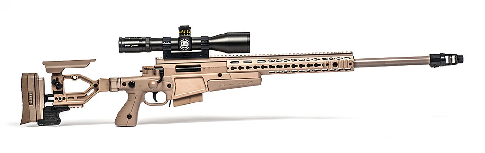

The AX308 is a high-performance precision rifle manufactured by Accuracy International, evolving from the legendary AW (Arctic Warfare) series. Built on a rugged aluminum chassis system, it features a tool-less folding stock and a highly versatile KeySlot™ mounting system for various tactical accessories. Its short-action design and battle-proven reliability make it a top choice for professional marksmen and long-range competitive shooters worldwide.
| Feature | Standard AX 308 |
|---|---|
| Type | Bolt-action precision sniper rifle |
| Caliber | .308 Winchester (7.62x51mm NATO) |
| Capacity | 10 rounds (detachable double-stack box magazine) |
| Barrel | Length 20, 24, or 26 inches (stainless steel) |
| Weight | ~13.9 lbs (6.3 kg) empty, without optics |
| Sights | Full-length MIL-STD 1911 Picatinny rail for optics |